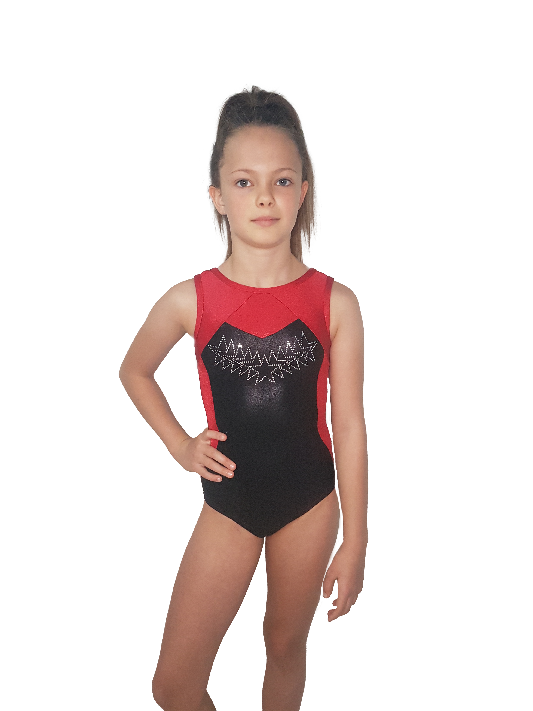
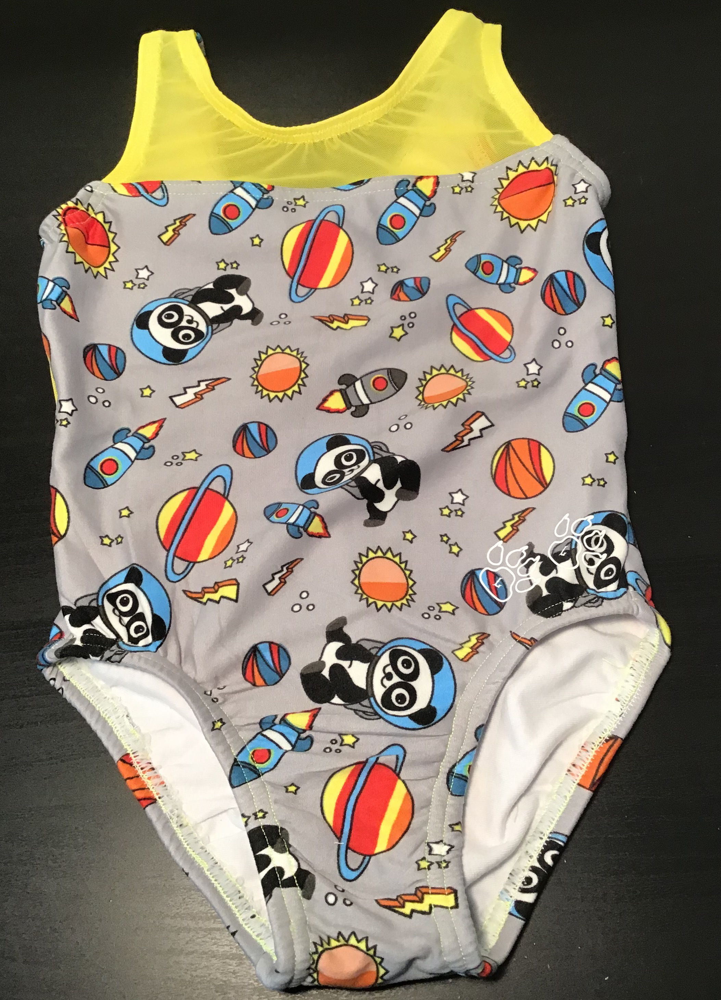
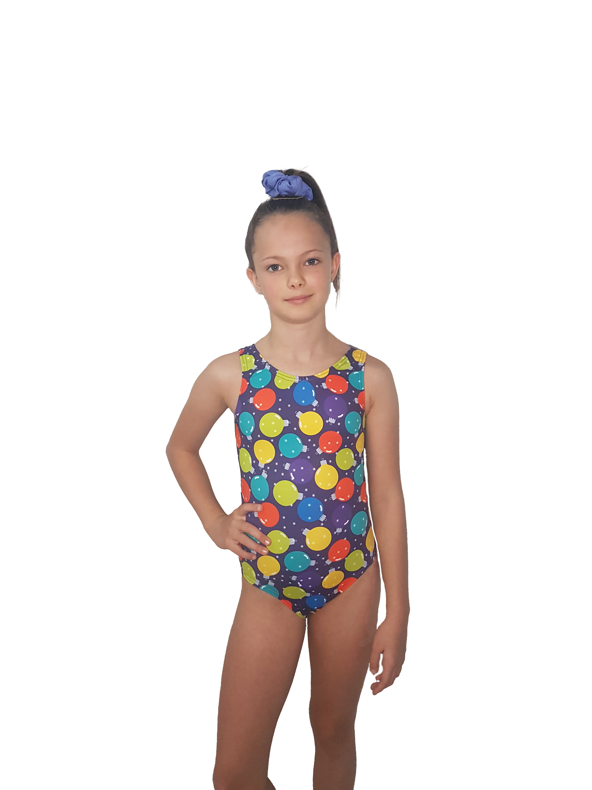

Boing Boing!
Hop into the new season in our colorful and perfect fitting leotards.
You are sure to discover your new favorite!
You are sure to discover your new favorite!

Our most popular styles and fabrics





Embrace your uniqueness, it's what sets you apart from the crowd and makes you special.
Never miss a newly added style or fabric
Click to join our mailing list and be the first to hear when we drop new styles and fabrics!